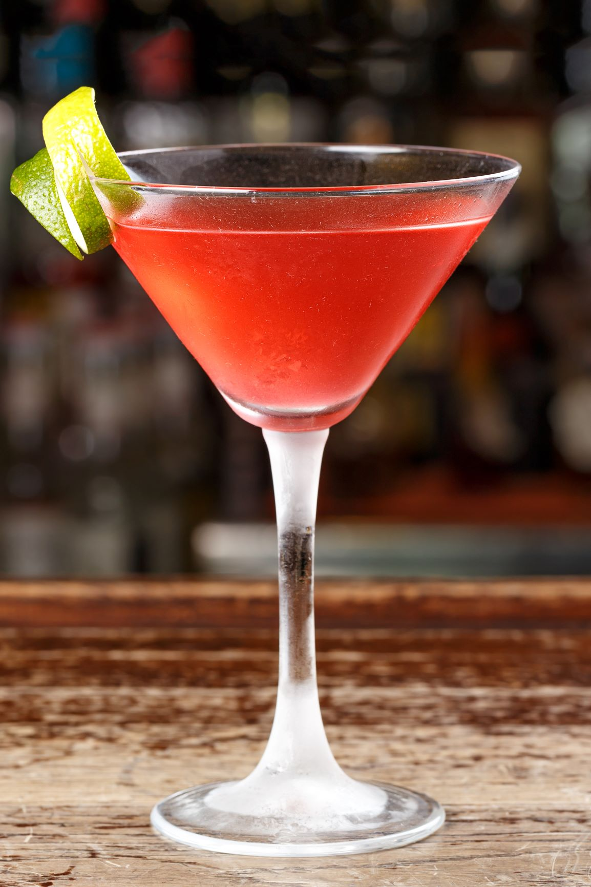

Cosmopolitan

Description
A Cosmopolitan is a simple yet refreshing beverage that was popular among TV characters in the 90s. With a minimal list of ingredients, this recipe found here, is perfect for an easy, tasty treat.
For more cocktail recipes visit the Home
Ingredients
This recipe makes 1 Cosmopolitan:
- Ice: 1 cup or as much as needed.
- Vodka: 1 jigger vodka.
- Cranberry Juice: 1.5 fluid ounces of cranberry juice.
- Orange-flavored Liqueur: .5 fluid ounces of cointreau, or another orang-flavored liqueur of your choice.
- Lime Juice: 1 tablespoon of fresh lime juice.
- Garnish: Twist lime zest for garnish.
Steps
All you'll need is a cocktail shaker.
- Add your ingredients to your cocktail shaker.
- Shake until frost forms on the outside of the cocktail shaker.
- Strain into a chilled glass and add garnishes of your choice.
- Enjoy!